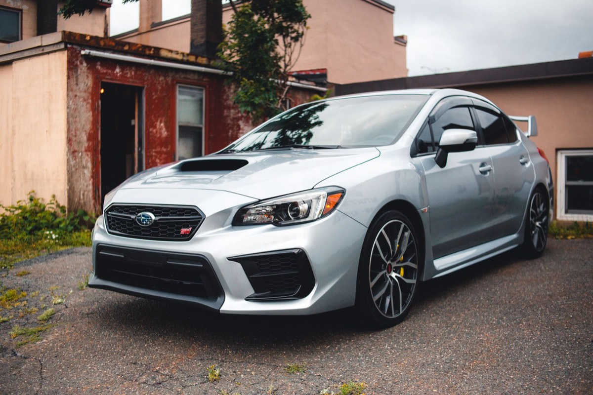
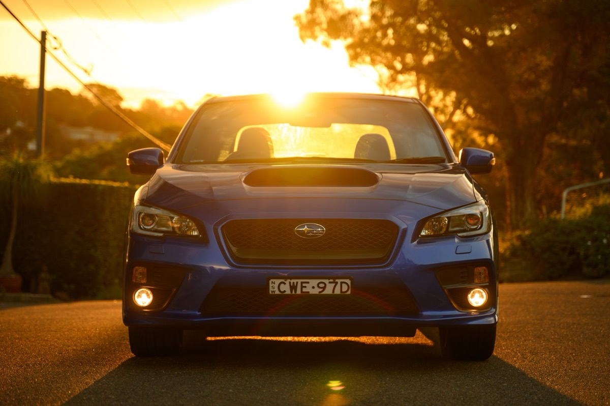
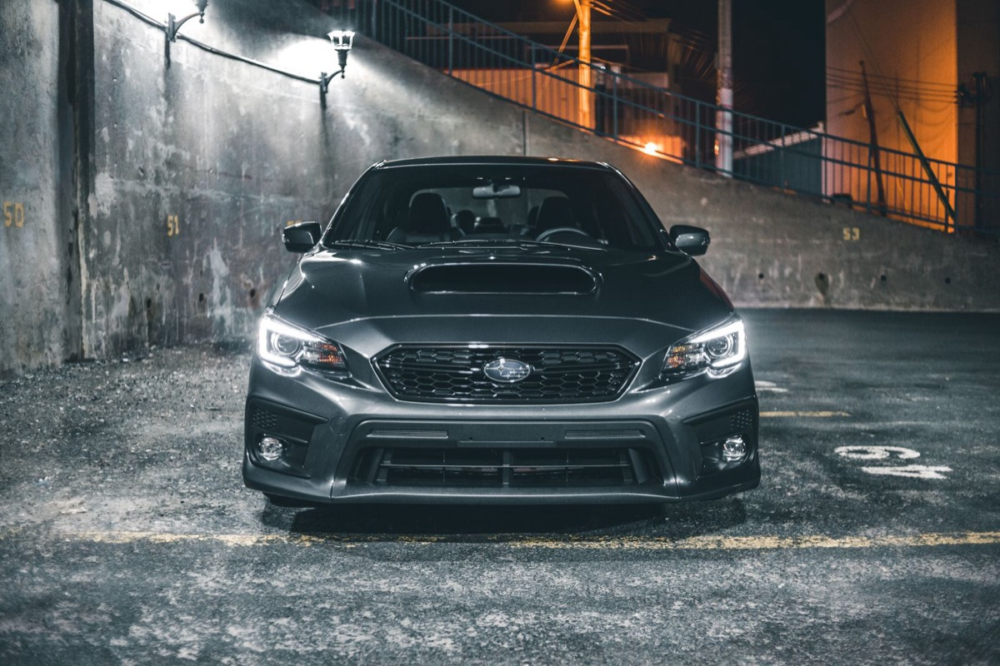

WRX Downpipe Before Cat-Back: The Order That Works, and the Part That Got Pulled
On a turbo Subaru the downpipe is the first real power step, and the review data says people buy it that way — the most-reviewed power part on the WRX is a catted downpipe with 279 reviews. It is also the part the biggest name in Subaru tuning has quietly stopped selling. That is the whole tension o
The most-reviewed power part on the WRX carries no CARB number, and the biggest name in Subaru tuning has stopped selling it. MAPerformance’s catted downpipe has 279 reviews at $749.99; COBB’s own product page now states its NexGen packages exist because of “the removal of Downpipes.” The Accessport, by contrast, lists EO D-660-16 and D-660-43.
COBB charges the same $770 for the Accessport on the 2015–2021 WRX and the 2022–2026 WRX, and discounts both to $654.50. The newer part carries seven CARB Executive Order numbers; the older one carries two.

On a turbo Subaru the downpipe is the first real power step, and the review data says people buy it that way — the most-reviewed power part on the WRX is a catted downpipe with 279 reviews. It is also the part the biggest name in Subaru tuning has quietly stopped selling.
That is the whole tension of this platform in one sentence, and it changes what you should buy first. So this guide does two things: it tells you the mechanical order, and it tells you what changed in the law and in the catalog, because buying in the old order in 2026 means buying something you may not be able to keep on the car.
Why the downpipe is first
The turbo sits on the exhaust manifold and the downpipe bolts directly to its outlet. Everything the engine exhales passes through that pipe before it reaches the cat-back, the resonator, or the muffler. Restriction there costs more than restriction anywhere downstream of it, because the gas is hotter, denser and moving faster at that point.
MAPerformance says it plainly on their own product page: “the factory 2015-2021 Subaru WRX downpipe is a huge bottleneck, limiting flow and robbing power.” That is the manufacturer’s claim for their own part, so treat it as a claim rather than a measurement. But the physics is not controversial — a larger, mandrel-bent pipe with a higher-flowing converter immediately behind the turbine does flow more than the factory piece.
The review counts back the theory. Read live on 17 November 2026 from maperformance.com:
| Part | Fitment | Price | Reviews |
|---|---|---|---|
| MAP catted downpipe Rev 4 | 2015–2021 WRX MT | from $749.99 | 279 |
| MAP downpipe | 2008–2021 STI | from $699.99 | 71 |
| Invidia divorced wastegate catted | 08–14 WRX, 08–21 STI | $850.67 (was $1,390.00) | 15 |
| Invidia catted, wideband bung | 2015–2021 WRX MT | $1,044.19 (was $1,603.98) | 13 |
| ETS GESI catted J-pipe | 2015–2021 WRX | from $1,075.50 | 8 |
| Invidia catted, wideband bung | 2015–2021 WRX AT | $1,044.19 (was $1,603.98) | 8 |
| MAP downpipe | 2022+ WRX | from $849.00 | 18 |
| STM catted J-pipe | 2022+ WRX | $1,399.00 | — |
| ETS GESI catted | 2022+ WRX | $1,255.50 (was $1,395.00) | 1 |
279 reviews is not a small number for a part that costs $750 and requires a tune to use properly. Compare it against the cat-backs, which is the purchase most people arrive already intending to make:
| Cat-back | Fitment | Price | Reviews |
|---|---|---|---|
| Tomei Expreme Ti | 08–21 WRX sedan, 11–21 STI sedan | $1,161.00 (was $1,290.00) | 201 |
| MAPerformance | 2015–2021 WRX/STI | from $999.99 | 69 |
| Invidia Dual N1 titanium tips | 2015–2021 WRX/STI | $1,095.05 (was $1,682.10) | 56 |
| AWE Track Edition | 2011–2021 WRX/STi sedan | $1,195.00 (was $1,257.89) | 39 |
| ETS cat-back | 2015–2021 WRX/STI | from $1,171.80 | 33 |
| Remark R1 | 2015–2021 WRX/STI | from $995.00 | 18 |
| Invidia Q300 | 2015–2021 WRX/STI | $1,453.50 (was $2,232.72) | 17 |
| MAPerformance | 2022+ VB WRX | from $1,149.00 | 18 |
| Invidia Gemini R400 | 2022+ WRX | from $1,547.01 | 6 |
| APEXi N1 Evolution | 2022+ WRX | $854.05 (was $899.00) | 5 |
The single most-reviewed exhaust item on the platform is the Tomei at 201. The downpipe beats it by 78 reviews at a lower price. That gap is the clearest signal in this whole sweep that WRX owners spend on power before they spend on sound — which is the opposite of what the truck catalog looks like.

What COBB did, and why it matters more than the review count
Here is the part that should change your plan.
COBB’s product page for the 2015–2021 WRX NexGen Stage 2 Power Package contains this sentence, in COBB’s own words: “NexGen Power Packages re-establish the modification and upgrade paths for supported vehicles that have been impacted by the removal of Downpipes. These packages provide similar performance and excitement while maintaining legal emissions standards.”
Read that twice. The company that made its name tuning Subarus is describing a world where downpipes were removed from the upgrade path, and their answer is a package that gets the power back without one.
So what is in the Stage 2 package instead? Read off the same page: Accessport V3, SF intake system, charge pipe kit, top-mount intercooler, and a 3-port boost control solenoid. No downpipe. The whole package is $2,565.00, discounted to $2,180.25, and it carries CARB EO D-660-172.
And in COBB’s own catalog, a search for “wrx downpipe” on 17 November 2026 returned 40 results, of which zero were named downpipe or J-pipe — the hit list was cat-backs and stage packages. Widening the search to plain “downpipe” returned 67 results, whose first entry was a Mitsubishi Evo X piece. COBB still sells downpipes; it does not sell one for the WRX.

The emissions picture, stated plainly
This is the section that decides the purchase, so it gets the numbers.
COBB Accessport V3, AP3-SUB-004 (2015–2021 WRX/STI): $770.00, discounted to $654.50. COBB’s emissions block says “50 State Legal” and gives CARB Executive Order D-660-16 and D-660-43.
COBB Accessport V3, AP3-SUB-006 (2022–2026 WRX): also $770.00, discounted to $654.50. Same “50 State Legal” statement, with seven EOs listed — D-660-125, D-660-153, D-660-179, D-660-193, D-660-225, D-660-257, D-660-317.
COBB Stage 1+ SF Power Package (SUB0041W1P, 2015–2021 WRX): $1,180.00, discounted to $1,003.00, 10 reviews, EO D-660-109.
Now the contrast. Every MAPerformance and Invidia downpipe listing checked for this guide carried no CARB text of any kind — no EO number, no 50-state claim, no California notice. Not “legal,” not “not legal,” simply absent.
So the honest answer on this platform: a downpipe with no EO number is not legal for street use in California and will fail a smog visual inspection. The tune, from COBB, has EO numbers and is. Those two facts point in opposite directions, and no amount of wanting the downpipe changes them.
If you are in a state that inspects, the tune is legal and the downpipe is the part you should think hardest about. Ask any seller for the EO number before you buy. If the listing cannot produce one, the answer is that there isn’t one.
COBB Accessport V3, 15–21 WRX → $654.50 · EO D-660-16, D-660-43 · checked 17 Nov 2026
MAP catted downpipe Rev 4, 15–21 WRX MT → $749.99 · 279 reviews · checked 17 Nov 2026
The order to buy things
Tune first — and specifically the COBB one. At $654.50 it is the cheapest thing on this page and the only one with a CARB number you can read. It is also the foundation every other purchase depends on: a downpipe on the factory calibration is not a modification, it is a check-engine light waiting to happen. Off-the-shelf maps for the parts below ship on the Accessport at no extra cost.
Intake and intercooler second, if you want power legally. This is exactly what COBB’s Stage 1+ and NexGen Stage 2 packages are built to do, and both carry EOs — D-660-109 and D-660-172 respectively. $1,003.00 gets you the Accessport plus the SF intake; $2,180.25 gets the full Stage 2. Expensive, and it is the route that keeps the car legal.
Downpipe third — and only with your eyes open. Mechanically it is the correct third step and the 279-review MAP part at $749.99 is the best-evidenced version of it. It has no EO. If you live somewhere without an emissions inspection and you accept that, buy it with a tune in the same order, not before.
Cat-back last, and buy it for sound. The Tomei at $1,161.00 with 201 reviews is the standout. A cat-back sits behind the converter, so it does not touch emissions equipment — but no listing here states its status either way, and silence is not clearance. Buy it because you want to hear the car.
The generations, and what the numbers say
Worth knowing before you shop, because the 2.0 and the 2.5 are not the same engine and the EPA data shows it. All figures read from fueleconomy.gov, per-model pages, on 17 November 2026:
| Year | Engine | Trans | Combined | City / highway |
|---|---|---|---|---|
| 2015 | 2.0L turbo | 6-speed manual | 24 | 21 / 28 |
| 2015 | 2.5L turbo (STI) | 6-speed manual | 19 | 17 / 23 |
| 2019 | 2.0L turbo | 6-speed manual | 23 | 21 / 27 |
| 2019 | 2.5L turbo (STI) | 6-speed manual | 19 | 17 / 22 |
| 2020 | 2.0L turbo | 6-speed manual | 23 | 21 / 27 |
| 2020 | 2.5L turbo (STI) | 6-speed manual | 19 | 16 / 22 |
| 2021 | 2.0L turbo | 6-speed manual | 23 | 20 / 27 |
| 2022 | 2.4L turbo | 6-speed manual | 22 | 19 / 26 |
The 2.5-litre STI is rated 4 mpg worse than the 2.0 WRX in every year both existed, and it lost a mile of city rating over that run — 17 in 2015 and 2017, 16 in 2020 and 2021. The 2022 car moved to 2.4 litres and landed at 22, one worse than the 2.0 it replaced. Premium fuel is specified in every one of these rows.
That matters for a build because the STI’s larger engine is also why its fitment
and its downpipe part numbers diverge from the WRX. MAP sells WRX-4G-DPC-REV4
for the WRX and STI-4G-DPC-REV2 for the STI — different pipes, $749.99 and
$699.99 respectively, and the STI part covers 2008 through 2021, an unusually long
run. Buying the wrong one is a fitment return, not a tuning problem.
The cheap part nobody mentions
There is one $62 item in this sweep that solves the most common problem with this whole plan, and it is worth naming: GrimmSpeed’s OEM downpipe to 3-inch cat-back adapter, $62.00, 66 reviews. The factory downpipe and most aftermarket cat-backs do not share a flange size. If you buy the cat-back first — or buy a downpipe and keep the stock system — an adapter is what makes the two ends meet.
66 reviews on a $62 adapter is a lot of people solving the same geometry problem. Read that as evidence for the ordering argument: plenty of owners end up with a downpipe and a cat-back that do not bolt to each other, which only happens if you buy them without planning the whole path.
What this guide is not saying
The downpipe is still the best power-per-dollar hard part on a turbo Subaru. This guide is not arguing otherwise, and the review counts show the market agrees with that.
What changed is that in 2026 you cannot treat “downpipe then cat-back” as a complete answer, because the emissions side of it is no longer a footnote. COBB adjusted its catalog and wrote the reason on its own product pages. That is worth more attention than any single dyno claim on a listing.
Topics
- Exhaust